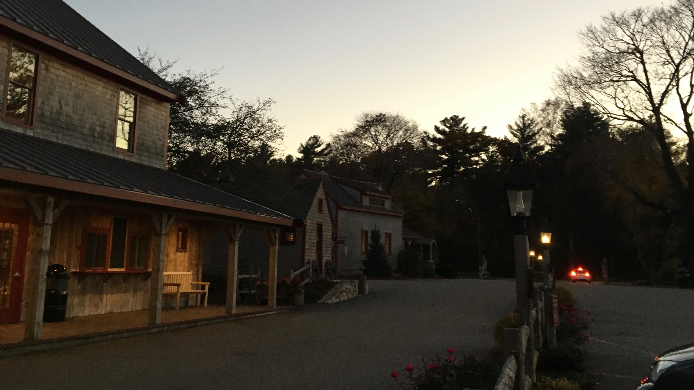
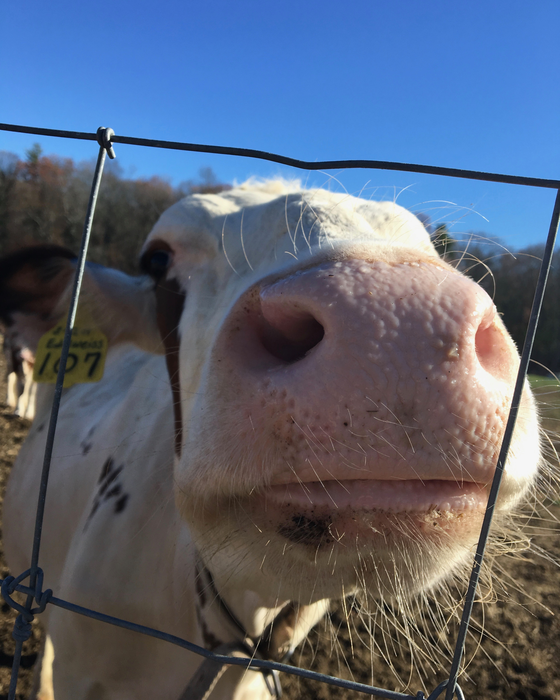
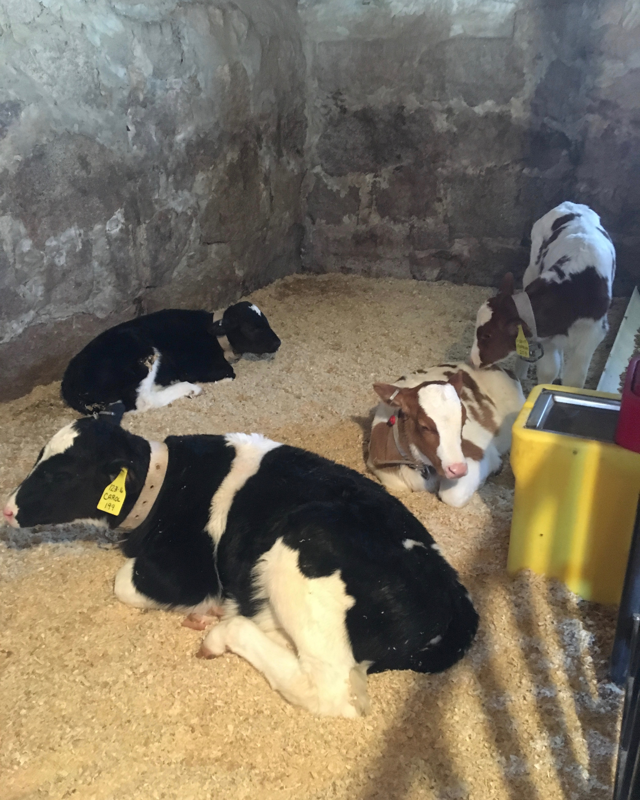
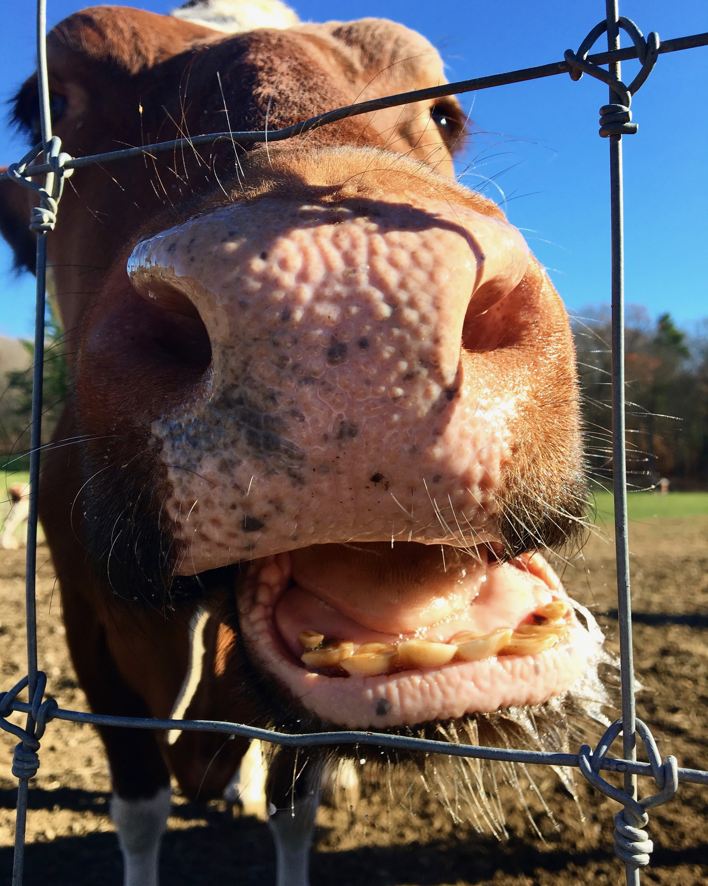
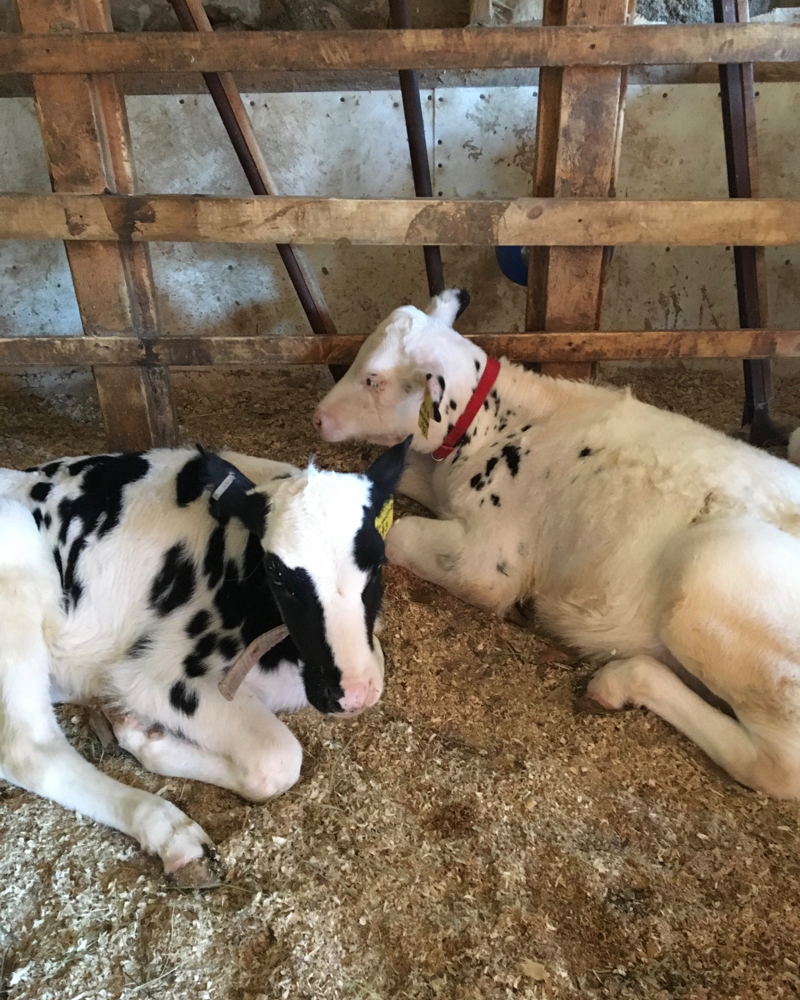

~HORNSTRA FARM~
At the Farm, I scooped a variety of different ice creams.
My favorite was the Almond Joy. I also had many different responsibilities.
Do you know how hard it is to keep a smile on your face while dealing
with an obnoxious customer? Or how hard it is to keep your cool
when there is a line down to the street? The worst was
cleaning the bathrooms and taking out the trash, but
the tips at the end of the night made it all worth it!
Here is a picture of the lovely farm:

Here are some cows:



